Clustering into same size clusters
Jun 9 2018 stats RI would like to cluster points into groups of similar size. For example I would like to group 1000 points into clusters of around 10 points each. The two aspects that are important here are:
- The cluster size distribution, or the deviation from the desired cluster size.
- The quality of the clusters, i.e. how similar are points within a cluster.
In addition to the typical hierarchical clustering approach, I will test the following iterative approaches:
- Iterative dichotomy: large clusters are split in two until around the desired size (using hierarchical clustering).
- Iterative nearest neighbor: a point and its closest neighboring points are assigned to a cluster and removed before processing another point.
- Same-size k-Means Variation that some quick googling returned.
As a baseline, points will be randomly clustered into same-size clusters.
In the following \(s\) is the target cluster size.
Iterative dichotomy
Starting with one cluster containing all the points, a cluster is split in two if larger that \(1.5*s\). When all clusters are smaller than \(1.5*s\), the process stops.
The points are split in two using hierarchical clustering. I will try different linkage criteria. My guess is that the Ward criterion will be good at this because it tends to produce balanced dendrograms.
Iterative nearest neighbor
While there are more than \(s\) unassigned points:
- A point is selected. Randomly or following a rule (see below).
- The \(s-1\) closest points are found and assigned to a new cluster.
- These points are removed.
If the total number of points is not a multiple of \(s\), the remaining points could be either assigned to their own clusters or to an existing cluster. Actually, we completely control the cluster sizes here so we could fix the size of some clusters to \(s+1\) beforehand to avoid leftovers and ensure balanced sizes.
In the first step, a point is selected. I’ll start by choosing a point randomly (out of the unassigned points). Eventually I could try picking the points with close neighbors, or the opposite, far from other points. I’ll use the mean distance between a point and the others to define the order at which points are processed.
Same-size k-Means Variation
As explained in a few pages online (e.g. here), one approach consists of using K-means to derive centers and then assigning the same amount of points to each center/cluster.
In the proposed approach the points are ordered by their distance to the closest center minus the distance to the farthest cluster. Each point is assigned to the best cluster in this order. If the best cluster is full, the second best is chosen, etc.
I’ll also try to order the points by the distance to the closest center, by the distance to the farthest cluster, or using a random order.
Test data
I’ll test the different approaches on dummy data with Gaussian distributions and some outliers. Both test datasets contains, 1000 points in two dimensions and includes 100 outliers. The second test dataset contains two groups, one larger than the other.
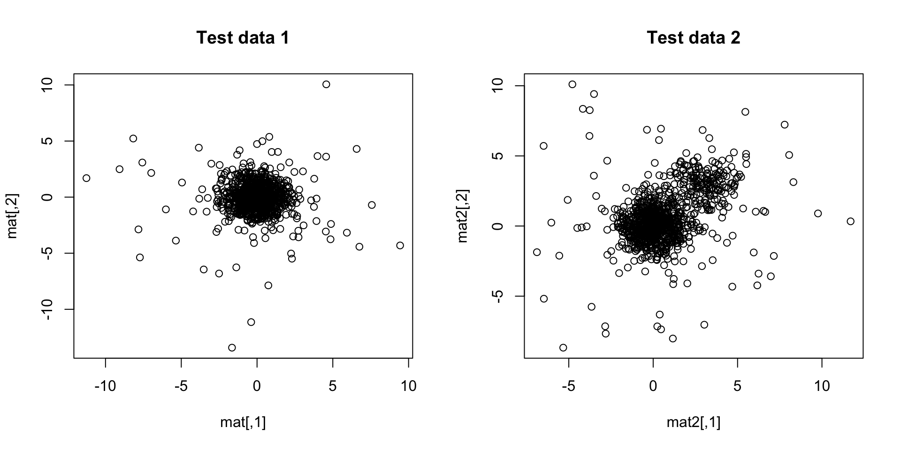
Results
Let’s aim at clusters of around \(s=21\) points. Not 20 because that way there will be left-over points (more realistic).
Test data 1
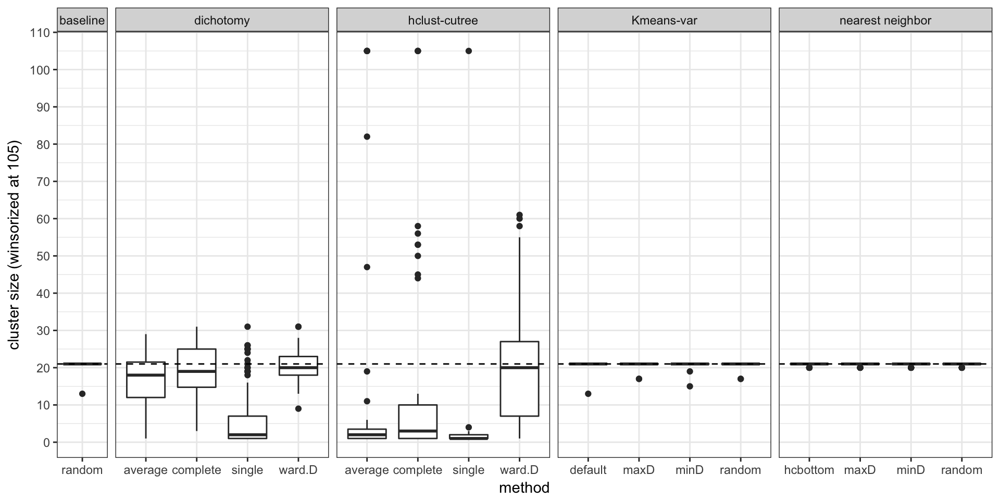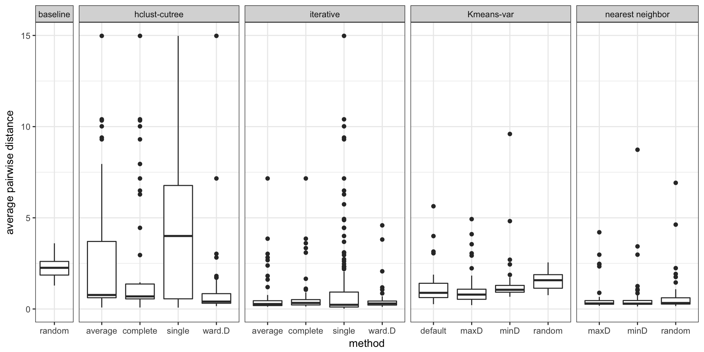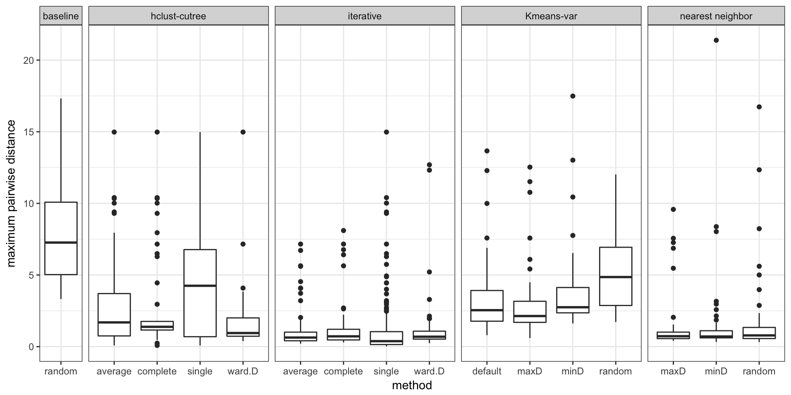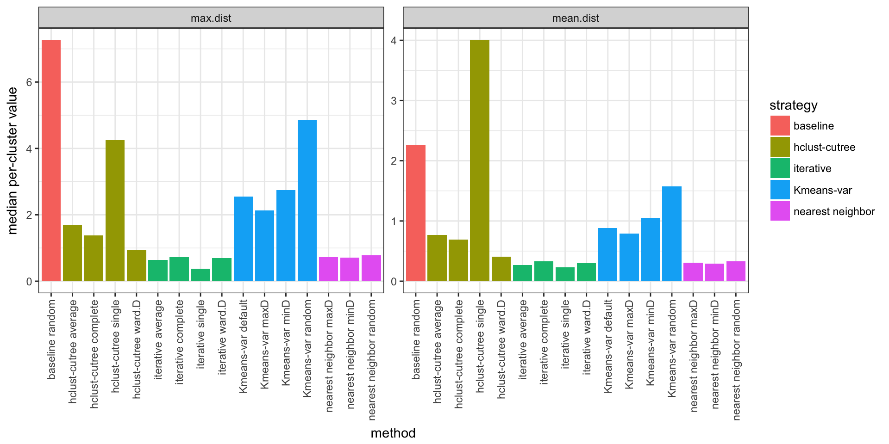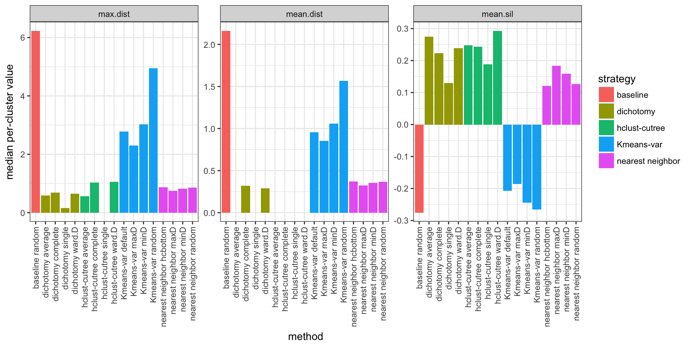
Test data 2
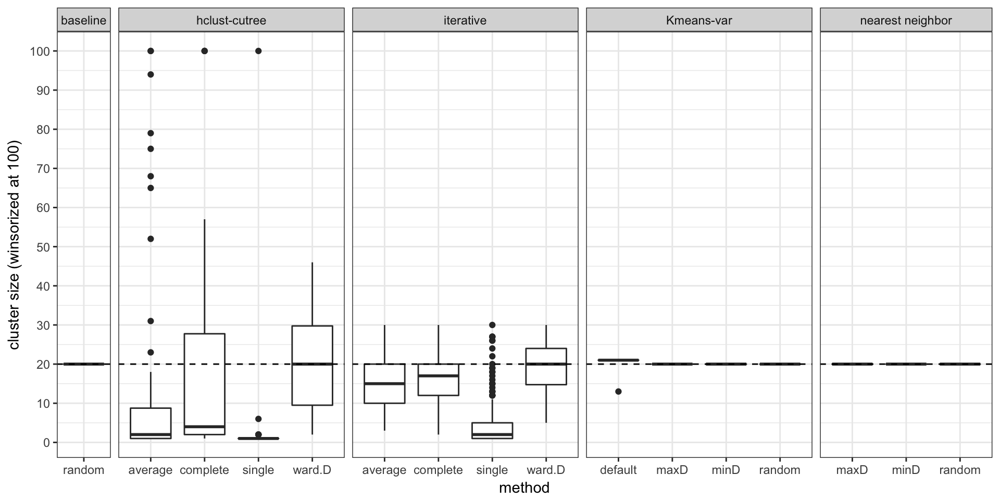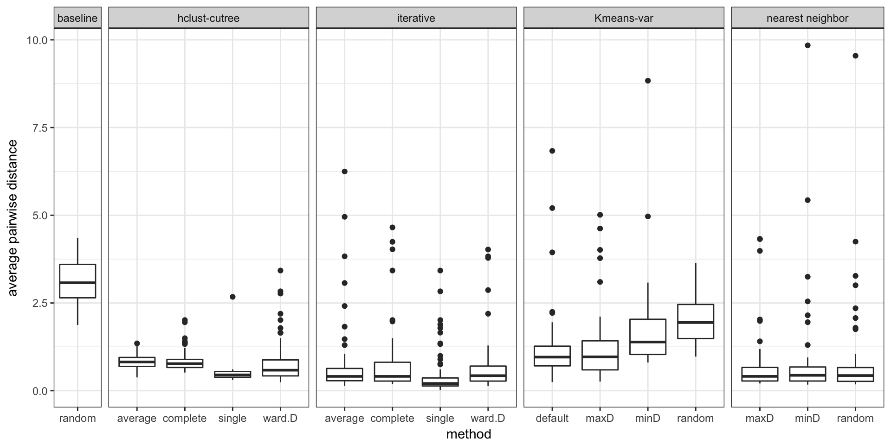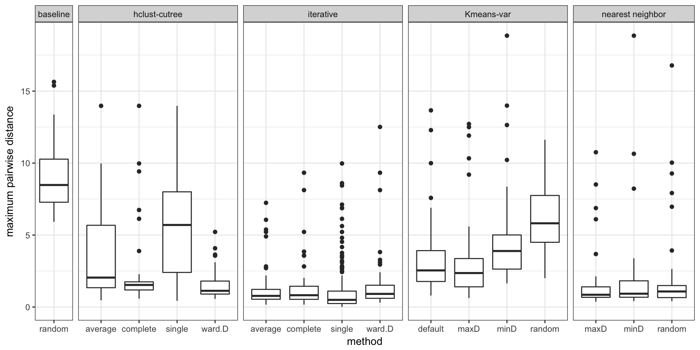
Conclusions
The iterative dichotomy approach is not as bad as I thought, especially using Ward linkage criterion, but it doesn’t really controls for the final cluster size. We end up with most clusters around the desired size but the size of some clusters still vary by a factor of 2 or more.
The nearest neighbor approach (maxD variant), is the best approach in my opinion. The cluster size is completely controlled and the mean/maximum pairwise distance for points in the same cluster is similar (or better) to other approaches.
The K-means approach didn’t perform as well but we can keep it in mind if the number of points is very large, as it is much more memory efficient (no need for a pairwise distance matrix).
Extra: optimization
The nearest neighbor approach requires a while loop, which is not efficient in R. Maybe implementing the loop with Rcpp could speed up the computation (in practice I would like to run this on up to 10K points).
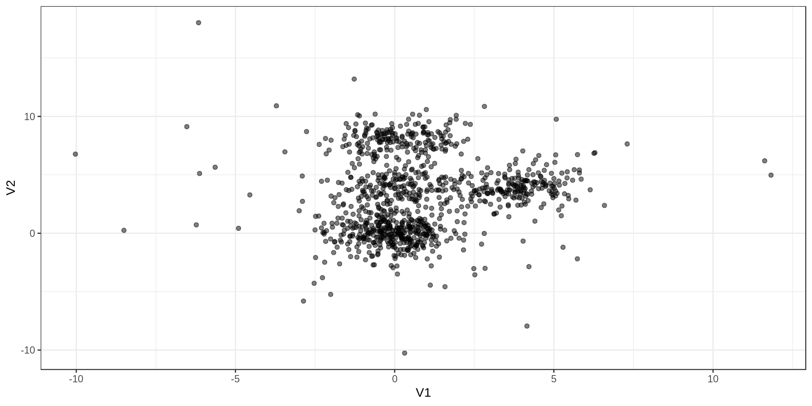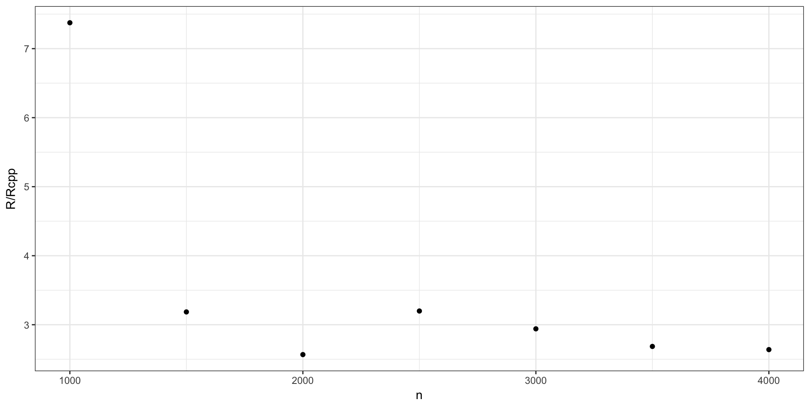
Three times faster with Rcpp!
Safety check, are the results actually the same ?

Yes. Ouf…
Code
The source code of this page can be found here.